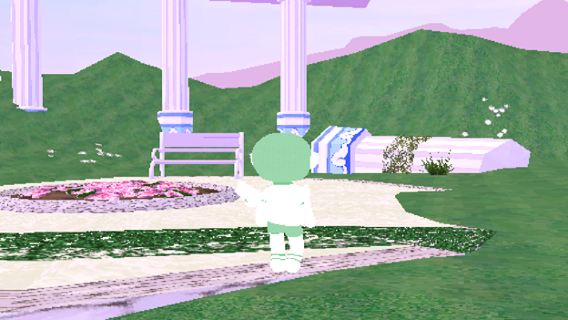
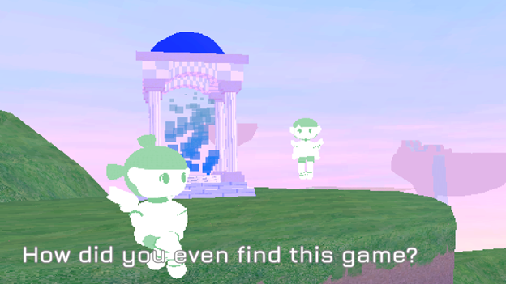
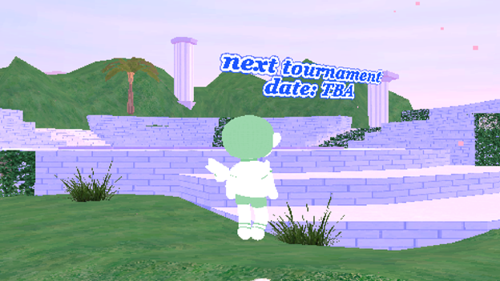

For the final DIGIT 100 project of the semester, we were tasked with finding and playing a game from online. Then we created a spreadsheet consisting of elements within the game and how they're related to each other. After that, we exported the sheet into a Kumu network to create and embed it to a page. Finally, we combined the visualized data and our notes to create a page dedicated to the game being reviewed.
The game in question is called e-scape, created by Olivia Haines for the A Game By its Cover 2021 game jam.
The original game can be downloaded here.(I highly recommend checking out and playing the game before heading any further down. It is an experience after all.)
e-scape is a game that doesn't take place in an in-universe world per se, but rather provides a look into ours. Olivia Hanes, the creator of this game, meant this to be a look into the last stage of the life cycle of old online games of yesteryear.
The cartridge you found at the resale shop. It reads "A True Simulated Nature Experience"
The story begins not on booting up the game, but with you, the person reading this after discovering a cartridge for the game e-scape at a resale shop. You return home andd then boot the game up on your computer. The title screen appears and transitions into gameplay in real time. This is where the game truly begins.
A garden area meant for players to hang out and chat.
e-scape is a Massively Multiplayer Online game from the 2000s. It's old and not popular at all, which is a problem for keeping server costs down. After wandering the barren virtual world, you finally find another user. The yused to play this game all the time back when it was being supported by the developers. They plan on spending the last of the game's days in this virtual relm before its servers shut down and renders it unplayable. Such is the tragic tale of many a game before this one. MMO or not. After taking the exit portal and log off, you go back to the title screen and the game restarts. The only way to truly quit is to press ALT+F4 on your keyboard. Whenever you return or not is up to you.
Only one other user can be found playing this game.
e-scape is a mechanically simple game. You use WASD to move and the mouse to look around. There are no flying mechanics, since you can't reach the other islands. There's no swimming mechanics, since you just float above the water. There's an implied friends list and limited time tournament mode, that can't be utilized due to a lack of in-universe players. And that is the entire point of this project. Just like any online multiplayer game like this, you can play it and explore the world. But without other players to be in this social experience with you, it just feels empty. The simulated nature experience from the 2000s nails what I expected from the back of the box. The game prioritizes its style and message over having complex or deep game mechanics. More so than usual because the servers are pretty much empty. I knew what to expect, and wasn't dissapointed. If this style of gameplay isn't for you, there are sad game experiences with more mechanical depth out there. Maybe even meta ones.
The arena that players can gather around for the limited time tournament mode events... that you can't play anymore. Nor will anyone else here.
Olivia mentioned on the e-scape's itch.io page that some features were cut from the game due to tiredness and work (As an amatuer editor, I know that pain too well). If this project were to ironically recieve an update, I have a few suggestions to improve the immersive aspect of playing a dead game:
We know that the game is capable of more complex game mechanics due to the now dormant tournament area. Perhaps a simple UI that can be toggled on or off could help with the immersion of you playing an MMO with the ability to prioritize the vibes of the game itself on command.
MMOs are meant to be social experiences. So I propose a game chatbox that would appear when pressing a certain key. You won't be able to actually talk to anyone with it, but it could emphasize the lonliness of playing a dead game. Maybe even hide a secret behind this mechanic? And speaking of which...
I've played a few MMO games in my day (mostly AdventureQuest) and one thing I remember from those is the fun little secrets the developers like to hide. Whenever it's a lesser-known area, pressing an unconventional key, or even consealing a secret minigame; it could give a further glimpse into the minds of the in-universe developers of e-scape. Plus, we all know cool it feels to stumble across a secret. Tell your friends about it on your message board of choice.
A graph of how people, events, locations, and game mechanics are connected with each other. This helps illustrate how even a simple game brings these elements together to create an experience. Try clicking and dragging on it.
Tutorial popups appear in certain places to assist new players. A genuinely useful game mechanic.
e-scape to me, is a simulation of a scenario I know all too well. I can recall several online experiences from my youth rendered unplayable via a slow and painful decline (Fusionfall. Hero Smash. I think Tera is dead too). And the legacy MMOs that survive longer than most usually have a high chance of succumbing to bad buisness practices. These games were like interactive message boards packaged within a cool game, containing a community within the social and game parts of a shared experience. Navigating one of these without any players is the equivalent of getting most of the gameplay, but not the full intended experience.
Is the game deep or mechanically complex? No. Is it stylized in a way that appeals to everyone? It's not supposed to. Will future generations truly understand the message without knowing the limitations of older technology? I don't know. What I do know is that this game is an experience with the vibes of yesterday representing the loneliness of today.